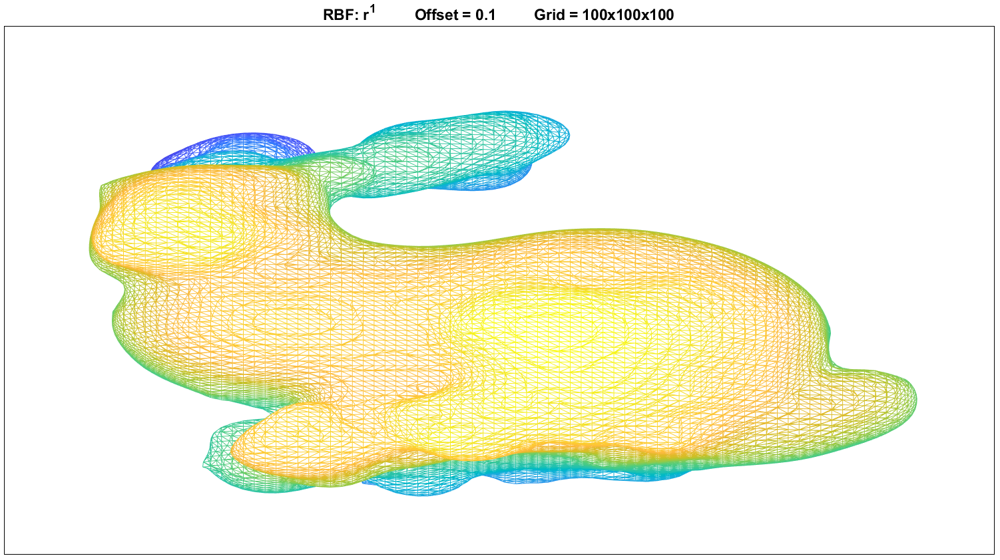
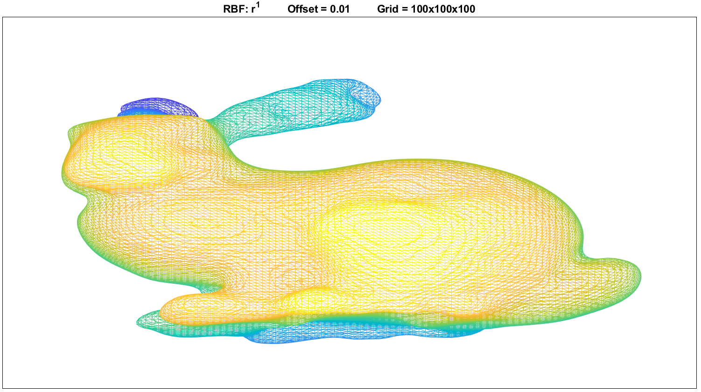
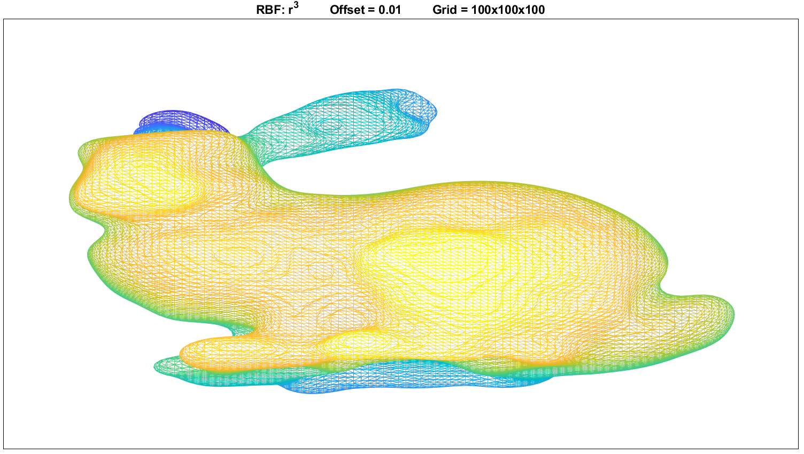
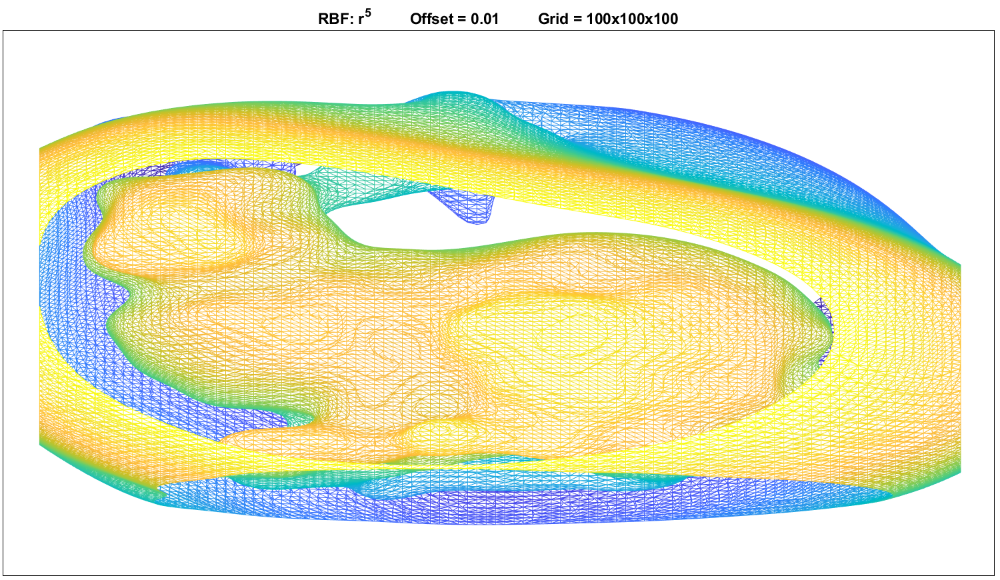
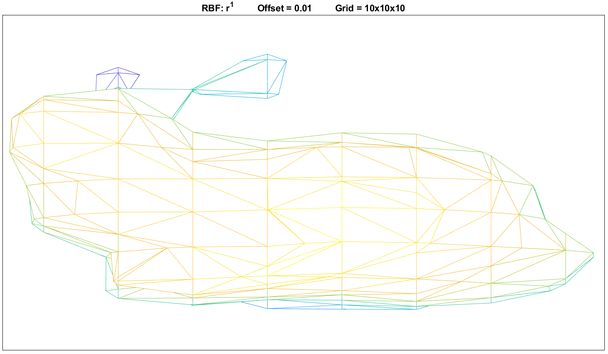
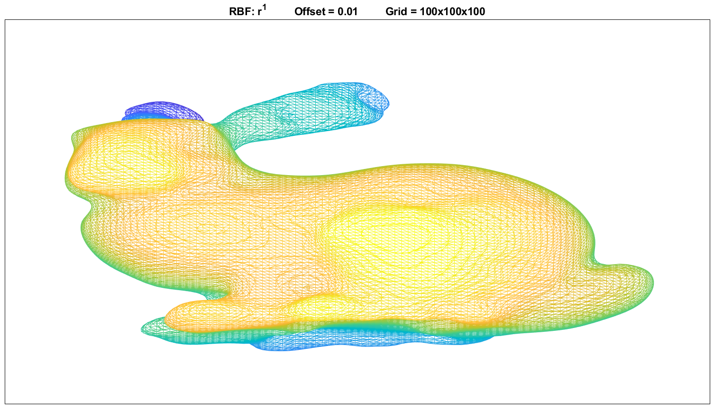

Trabalho 2
Geração de Malhas a partir de Nuvem de Pontos
Aluno: Hugo Leonardo França
Professores: Afonso Paiva e Luis Gustavo Nonato
1. Descrição
Neste trabalho foi implementado um algoritmo de interpolação RBF para determinar uma superfície implícita a partir de uma nuvem de pontos com vetores normais. Após criada a superfície implícita (dada através de uma função \(F\) definida em um grid), uma malha para a superfície é construida com a função isosurface do matlab.
Nas seções abaixo apresentamos os resultados obtidos para a nuvem de pontos fornecida no enunciado do trabalho. Em especial, averigua-se o efeito de três parâmetros na solução final. Estes parâmetros são:
- Offset: espaçamento utilizado na construção dos novos pontos da nuvem. Estes pontos seguem a direção do vetor normal e estão a uma distância offset dos pontos originais.
- Expoente RBF: é o expoente \(k\) utilizado na função de base radial poli-harmônica \( \varphi(r) = r^k \).
- N: é a dimensão do grid no qual a função que define a superfície implícita será avaliado. O grid é criado com \( N \times N \times N \) pontos.
2. Efeito da variação do offset
Nesta seção o parâmetro offset foi variado para verificar o seu efeito na solução final. Nas imagens abaixo são mostradas as superfícies obtidas com offset=0.001 e offset=0.1, respectivamente. Por fim, apresenta-se uma animação com uma variação maior do parâmetro.
Pelos resultados, nota-se que deve-se usar valores relativamente pequenos para este parâmetro.
{kind=link}
{kind=link}

3. Efeito da variação da RBF
Nesta seção o expoente da função RBF poli-harmônica foi variado para verificar o seu efeito na solução final. Nas imagens abaixo são mostradas as superfícies obtidas com as RBFs \(\varphi(r) = r^1\), \(\varphi(r) = r^3\) e \(\varphi(r) = r^5\), respectivamente.
Os resultados obtidos foram razoáveis apenas até a RBF de ordem cúbica. A partir disto, a superfície obtida já estava visivelmente degenerada.
  {kind=link}
{kind=link}
{kind=link}
4. Efeito da variação do grid
Nesta seção o refinamento do grid de interpolação foi variado para verificar o seu efeito na solução final. Nas imagens abaixo são mostradas as superfícies obtidas com os grids \(10 \times 10 \times 10 \) e \(100 \times 100 \times 100 \), respectivamente. Por fim, é feita uma animação, mostrando uma variação maior destes grids.
Como já era esperado, utilizar grids mais refinados gera melhores soluções. Contudo, o tempo de processamento também é significativamente maior.
 {kind=link}
{kind=link}

5. Outros exemplos
{kind=link}
{kind=link}
{kind=link}
6. Código-Fonte
O código-fonte pode ser acessado clicando aqui.
Para rodar os exemplos individuais apresentados aqui, basta rodar o arquivo main.m no matlab. Logo nas primeiras linhas do arquivo é possível escolher os parâmetros e qual dos exemplos deseja rodar.
As duas animações (no formato .gif) apresentadas podem ser geradas rodando os scripts main_Offset.m e main_N.m.